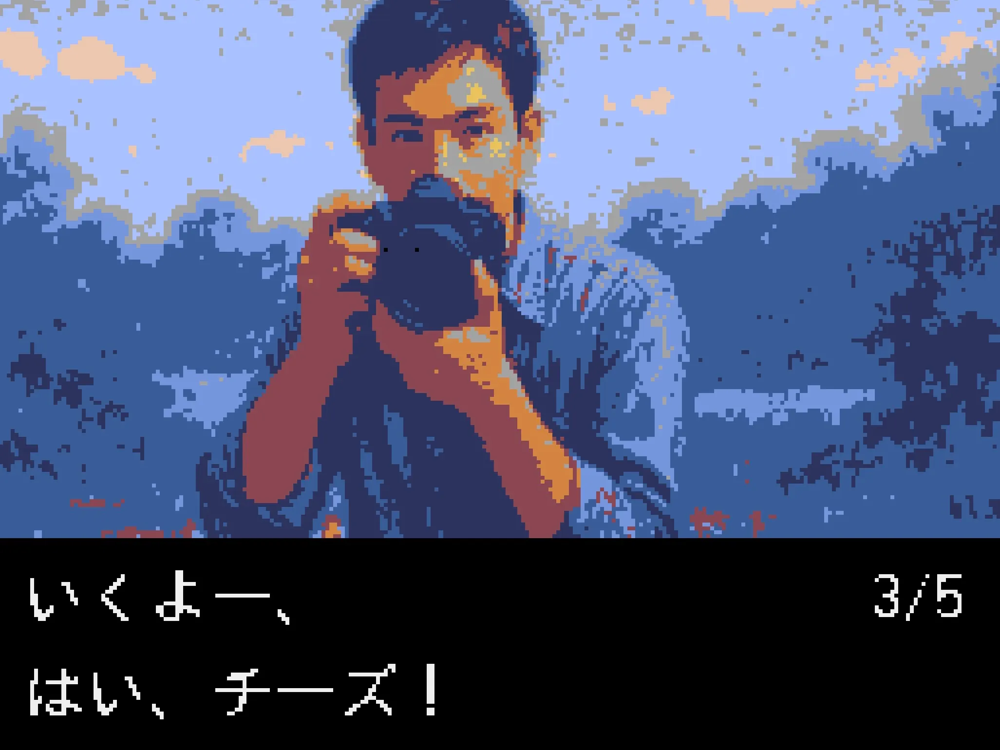
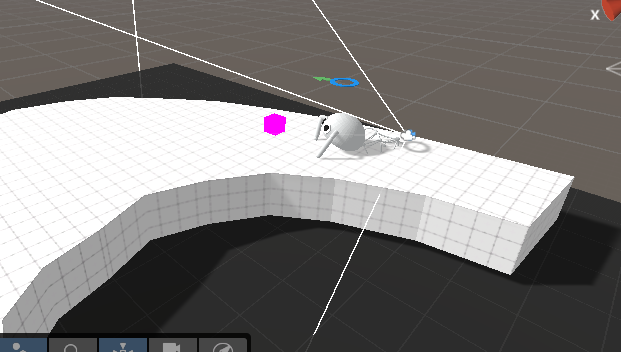
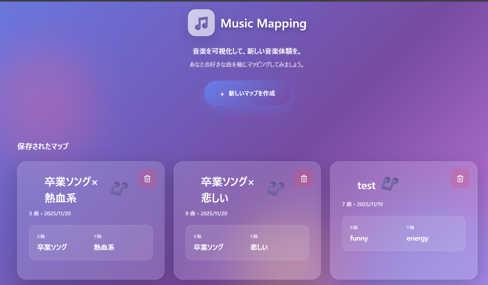
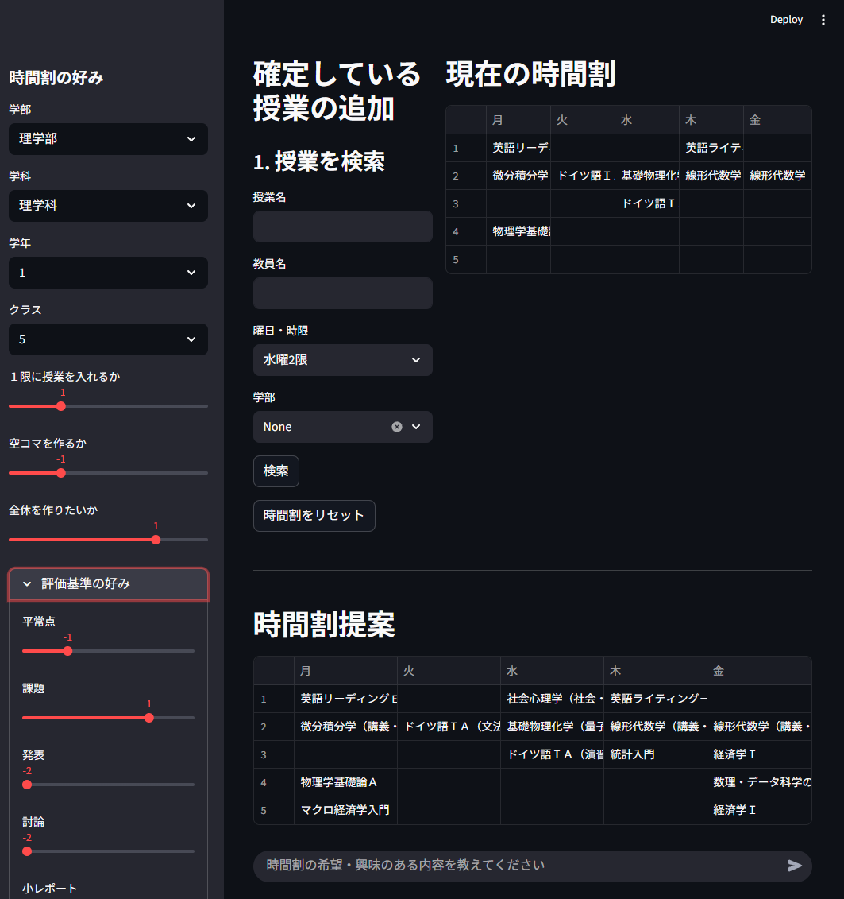

京都大学11月祭
NF2025
About KaiRA
サークル紹介
京都大学人工知能研究会 KaiRAは、AIについて学んでいるサークルです。
毎週木曜日に勉強会を行っており、今期は強化学習と数理最適化についての本の輪読をしています。 読みたい本・論文があれば、人を集めてみんなで読むことも可能です!
週に一度実装会も行っており、各回でテーマを決めて、輪読会の内容を実装したりしています。
月に一度論文読み会も行っており、各回でテーマを決めて、最新のAI論文を発表したりしています。
活動の中心は毎週木曜日の勉強会と実装会ですが、制作物を作ったり、チームを組んでkaggleなどの機械学習コンペティションに参加したりもしています。
スポンサーとして株式会社Ristさんと株式会社スクラムサインさんが付いてくださっており、サークルメンバーに対して本の購入補助や計算機代の補助もしています。
11月祭の展示で興味を持った方がいればぜひ一緒に勉強しましょう！
Demos
デモ
11月祭会場ではAIに関するデモを行っていますが、一部のデモはオンラインでもご覧になれます。 ぜひ楽しんでいってください！！



Agenticな京大シラバス検索・時間割作成システム
ユーザーから提示される履修希望や興味・関心といった曖昧な要望を解釈し、 時間割の空きコマや履修要件といった複雑な制約条件を考慮しながら、学期全体の時間割を自律的に構築・提案するシステムです。